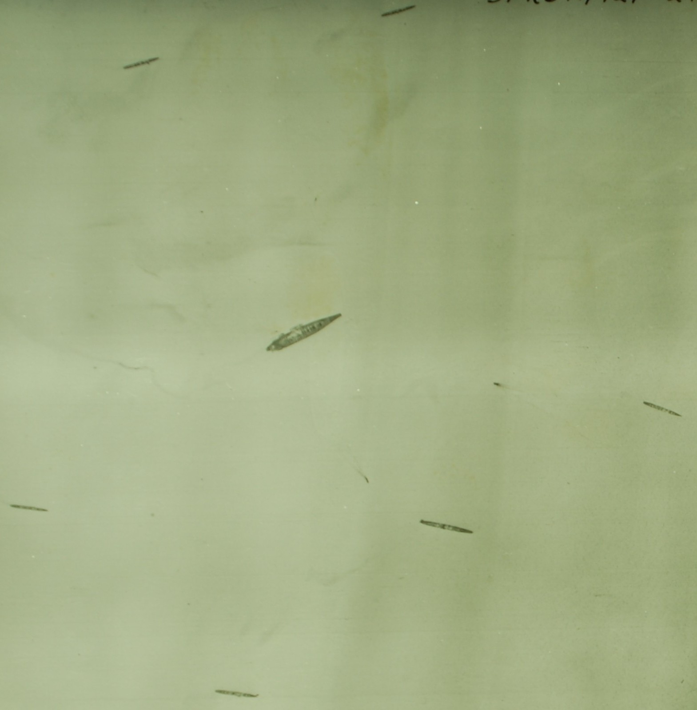
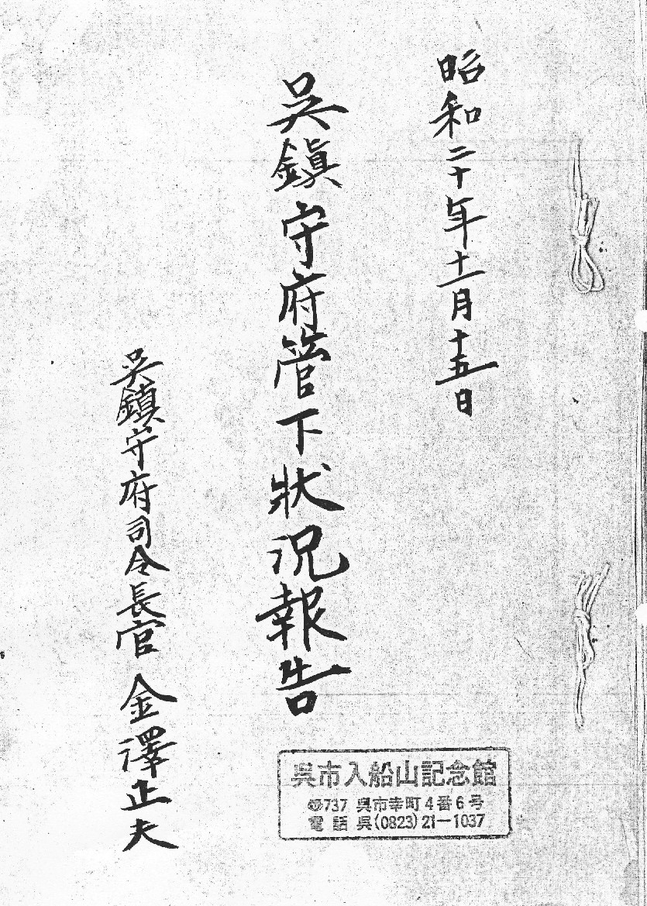
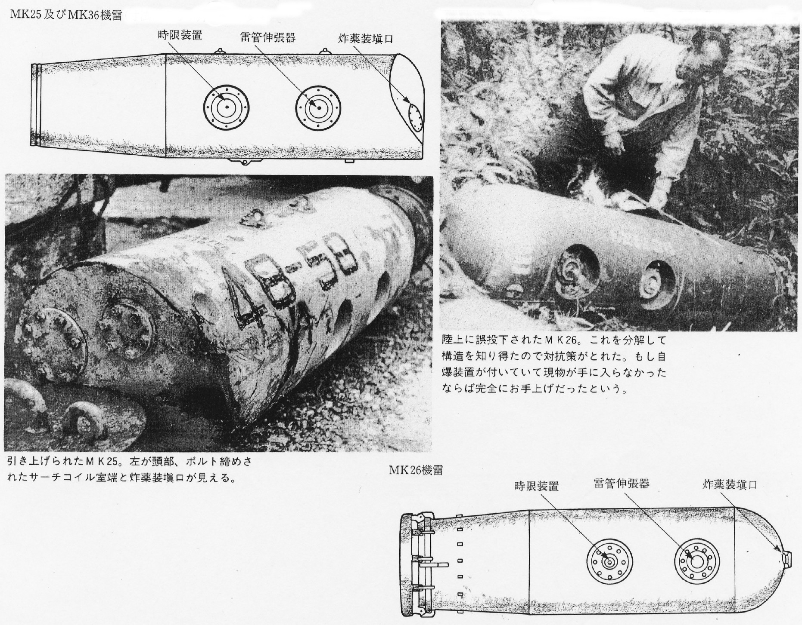
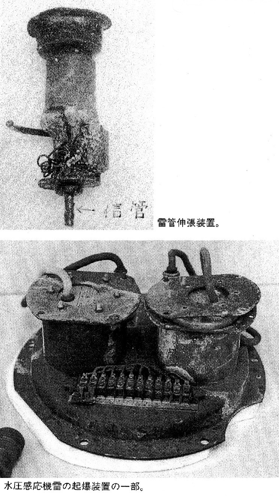
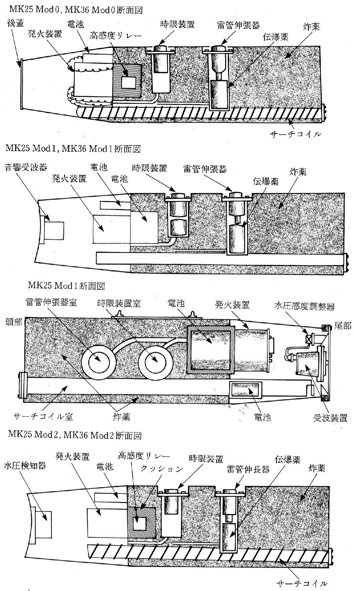
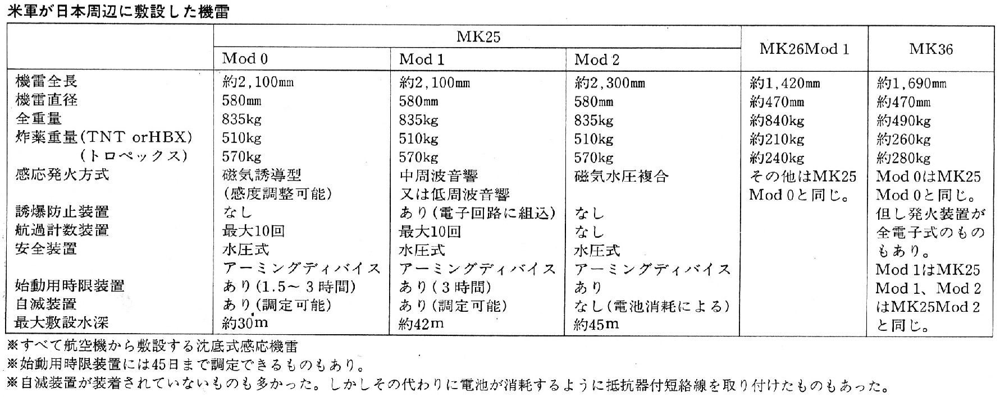

・呉の戦災
２．主な空襲
・機雷敷設攻撃
米軍は沖縄群島攻略の時に、日本海軍による海上補給と応援部隊が輸送されるのを防ぐため、
3月19日の呉軍港空襲と3月27日以降の機雷投下敷設を行う「対日「飢餓」作戦」攻撃を行った。
１９４５年３月１９日
米軍の沖縄上陸の前に、米空母艦載機３６０機が呉湾に来襲し、広島湾に退避中の戦艦「大和」は内地で最初の写真を撮られた。
呉湾内に、在泊退避中の日本の残存艦船（戦艦「大和」空母５隻を含む）１２２隻は、すべて識別されて報告された。
１９４５年３月２７日
沖縄支援の対日機雷攻撃戦（局面Ⅰ、３月２７日～５月１日）が、開始され、
主として、下関海峡、呉及び佐世保軍港、広島湾にパラシュート機雷を投下、
機雷敷設は８月１５日の局面Ⅴにまで続いた。
 広島湾ー呉軍港の機雷投下敷設図
広島湾ー呉軍港の機雷投下敷設図
１９４５年３月２８日
B２９写真偵察機F-13は呉湾に結集した「大和」はなど日本海軍の残存勢力の完全な垂直写真の撮影に成功した。
１９４５年３月３１日
ー「B２９ ０００５時 警戒警報、００３０ 空襲警報」ー
広島湾に機雷が敷設され、駆逐艦「響」が触雷して「大和」沖縄特攻同行を断念、呉港に入港した。
局面Ⅰの機雷攻撃戦の目的は、３月２８日、呉湾に終結した「大和」と、その他の艦艇の分離であったが、
その初段階において「響」が、まず、この沖縄支援の血祭りに挙げられた。
No.49の機雷集中敷設海域は、呉、西能美町から広島湾へ向かう入り口で、
No.52,No.53,No.54は専ら呉湾である。
前者は、呉湾の艦艇が「大和」に合流するのを防ぐための作戦であったか、
後者は、「大和」が広島湾に向かうのを防ぐための作戦であったか、
任務報告には明記していないが、日本の機動部隊が、この機雷敷設原を突破したのは、
「大和」以下のわずか１回であった。
１９４５年４月６日～７日
F１３写真偵察隊は、３月２８日以降、初めて４月６日に、再び大和を発見し、徳山沖で燃料補給を行っているところを撮影した。

徳山沖の戦艦大和と同行艦 工藤洋三氏提供 米国立公文書館蔵
１０時間後、大和は米軍が描いたシナリオのパターンに沿って豊後水道を出て九州沖で沈められた。
《資料》
「対日「飢餓」作戦 作戦任務 第４９」
《抄訳》吉田巍彦（よしだ たかよし）
Operation "STARVATION"（対日「飢餓」作戦）
Tactical Mission Report Mission No.49（作戦任務報告 第４９号）
XX1 BOMBER COMMAND （第２１爆撃集団司令部）
March 30.1945. （1945年３月３０日）
第２１爆撃集団司令部 野戦命令 NO.４９
１９４５年、３月３０日
攻撃目標 ： 門司、呉、広島湾、広町および、佐世保地域
管制本部 報告 １９４５年５月２０日
１、作戦任務、内容を確認
a、１９４５年、１月２３日、及び、３月１１日付
第２１爆撃団の指令に基づき、第３１３爆撃団は、機雷作戦計画を引き続いて遂行する。
b、省略
c、攻撃目標の明細
（１） 第一攻撃地域
(a) 門司地域 ： 機雷敷設海域 ： ラブ（Love) ドック(Dog)攻撃隊
： 東口を経由して、下関海峡を抜ける主要な船舶航路にして最大の機雷敷設密度の
宇部岬、本山岬に近接した船舶航路および門司北西部の航路先の湾曲部に計画。
閉鎖は、本山岬、満珠島、及び羽島に囲まれた水路の両側に計画。
（b） 呉、広島湾地域
： 機雷敷設海域 アイテム(Item) フォックス(Fox)攻撃隊 :
柱島水道を抜ける主要な船舶航路にして、機雷は呉広島への入り口に敷設を計画、
追加の機雷は、西能美、厳島間の呉の南方入り口に向う船舶航路、八代町北方の海軍碇泊所、大畠瀬戸北口及び広広島湾に敷設を計画。
（C) 広島地域： 機雷敷設海域 ジグ（Jig) イージィ(Easy)攻撃隊
主要な機雷集中敷設海域は、厳島、西能美町間の広島へ向う入り口に計画、
追加の計画は、音戸の瀬戸南部入り口横断水域。
（ｄ) 佐世保地域：機雷敷設海域ロジャー(Roger)ジョージ(George)攻撃隊は省略
２、 管制本部の戦略と計画
a. 目標の戦略上の重要性
(1) 門司 : 省略
(2) 呉: 呉は、主要な海軍基地として重要な港湾都市である。東京の南方にある横須賀海軍基地が米空母による攻撃を２回を受けて以来、その重要性は更に大きくなった。
呉の海軍造船部は、船台１１、係船渠及び、修理改装浮桟橋以外に、一貫修理工場を備えた日本最大の海軍工場である。
ここでは、あらゆる型式の海軍艦艇の取り扱いが可能である。
艦船の完全な艤装と修理も可能で、日本の主要な海軍タービン機関の工場が位置する隣接の広工廠から供給される。
(3) 広町： 広島には、日本陸軍の第５集団司令部があり、主要な積出港である。
陸軍の輸送隊基地が、これからわずか９マイルの位置にあり、陸海軍共同の船団活動には恵まれた位置である。
神戸以西の本州最大の都市であるが、同等規模の他の都市ほど高度に工業化されてはいない。
その工業の大半は、重要性は地方的なもので、陸軍の補給と、兵站の活動に結びついている。
艦隊の使用に適した大型の防護された停泊所が市の南方の広島湾に位置している。
（４) 佐世保 省略
b、戦況
(１) 下関海峡の東口進入路に対する機雷敷設の当面の戦術的な目的は、米軍の沖縄群島攻略の時に、海上補給と応援部隊が南西諸島に対して輸送されるのを防止することにあった。
通常の船舶輸送路は、瀬戸内海から下関海峡を抜けて、九州西岸の防護水路を南下する。海峡の通路を閉鎖することは、この防護水路の使用を不可能にし、豊後水道の利用を余儀なくさせ、船舶を米潜水艦の攻撃にさらさせることになる。
（２） 呉、広町における機雷の敷設に先立って、１９４５年３月２７日と２８日に行われた写真偵察によって、次の日本の艦船が呉の海軍基地にいることが分かった。
すなわち戦艦６隻、空母３隻、重巡４隻、軽巡１隻、駆逐艦１３隻、潜水艦１６隻、
補助艦艇１６隻。その他商船５隻、広島南の宇品港で潜水艦２隻を視認。
この機雷敷設作戦任務は、米海軍兵力が沖縄上陸作戦を支援中、この日本の主要な海軍兵力を封鎖するために計画されたものである。
c、計画の詳細
（１）作戦計画 省略
（２）攻撃計画の詳細 ：詳細はすべて第３１３爆撃団野戦命令 NO.１７に明示。
（３）機雷積載量の決定：
（a） すべての航空機に、１万２０００ポンドの機雷（26-1型または36-1型１２ヶ、または、２５型６ヶ）。爆弾倉内タンクは携帯しない。
(ｂ) 、省略
（４）機雷敷設 取扱 省略
第２部 機雷敷設の成果
１、a、この作戦によって、敷設され、すべての機雷の位置。次の図表に示す。
広島湾ー呉軍港の機雷投下敷設図
ｂ、当作戦の計画に組み込まれたB２９の機数は１０２であった。そのうち８機は離陸に失敗、その他７機は、機雷の投下に失敗、１機は、基地帰還に際し墜落。
ｃ、あらゆる型式の機雷合計８２５ヶが、機雷投下海域の「ラブ」「ジグ」「アイテム」および「ロジャー」の目標に敷設された。
分布は大略次の通り：
（１）、（２）、 省略
（３）機雷投下の海域 「アイテム」 （広島湾ー呉地域）：この地域には２０４件の機雷が敷設され、うち８４ヶは、1,000ポンドサイズで、１２０ヶは、2,000ポンドサイズ。
（a）1,000ポンド機雷のうち、６６７０は音響式（A-3 改1,MM1)で、残余の磁気式はM9改１機構を整備。磁気式の約半数は、不感秒時が８．０秒で、残りの半数は１０．５秒。
全磁気機雷の約３分の１は低感度に設置されている。
音響機雷には発火準備延期装置も、通過回数起爆装置も使用されていないが、磁性機雷は、１、３、５、７、１０、１５および、２０日間隔別の発火装置ごとの機雷グループとし、
更に各グループを１通過と３通過の通過回数別に分け、その比率は２対１とした。
（ｂ）２、０００ポンド機雷のうち、１５％は音響機雷(A-3改1,MM1)で、残余の磁気式は、M11機構。
この音響装置には、発火準備延期装置も、通過回数起爆装置も使用されていないが、磁性機雷は上記と同じ間隔で発火するよう設定され、通常、回数計数は、１、２、および、３回で、その比率は、それぞれ、３：２：１である。
（４）「ロジャー」機雷投下海域 省略
ｄ、 米大西洋艦隊司令長官の許可を得て、上記機雷のいずれにも消滅装置を用いていない。
e, 省略
ｆ、この作戦において敷設されたマーク
２５MM4機雷には９フィートのパラシュートが装着され、その他すべての機雷には６フィートのパラシュートが装着された。
機雷２ヶが水面に激突して、爆発するのが観測された。パラシュート１ヶが機能しないのが観測された。
２本の短い自動曳索が航空機に回収された。１機が離陸後、３００フィートの高度でマーク２６－１か、３６－１の機雷１２ヶを投棄した。
速度は１９０ｍｐｈを示していた。ただし、詳細不明なるも、機雷１ヶは水面に激突して爆発した様子である。尾部射手は重傷をうけた。
ｇ、h, 省略
i 投下機雷海域に関する意見
（１）投下機雷海域「ラブ」 門司ー下関東口
当海域に敷設された全機雷の最終定点に関する最善の資料に基づく地点表はBセクションの図表に示される。
全体的に、敷設状況は、この敷設海域におけるレーダースクリーン確認の正確度は別として、攻撃前の簡潔説明および指令通りであった。
目標地域に到着不能であった５機中の１機は、その場合に予定されていた主要海路に敷設した。主要海路のカバーは十分であった。それで、既定水路における敷設程度の計画は達成された。
（２）投下機雷海域「ジグ」 （広島ー呉北口）
この投下海域に機雷敷設を予定された１４機のうち４機は、予定目標地域に到達不可能であった。
したがって、その成果としての敷設分布は、厳島・西能美島間の瀬戸を完全にカバーできなかった。
現状の投下海域は、強力な消耗機雷原であり、投下海域「アイテム」を超えて広げられる敵の掃海努力は、それ自体を完全に封鎖するには多分至らないであろう。
（３）投下海域「アイテム」 （広島ー呉南口）
目標地点不能の航空機がいたために屋代島北方の海軍艦艇碇泊地及び大畠瀬戸を抜ける狭い進入路の投下海域の計画は弱体化した。
ただし、主要水路を横断する投下海域に対する機雷敷設は、攻撃前の簡潔説明および指令通りに実施された。
この投下海域「アイテム」は、「ジグ」と共に、広島地域の航行を試みる艦船に対する完全な封鎖を必要とする機雷原である。
もし日本の海軍部隊を呉地域内に今後長く封じ込める計画を意図するのであれば、この投下海域「アイテム」の機雷投下作戦を増強することを勧告する。
集約
M36-1 1,000.ポンド M25 2,000.ポンド
投下海域 計画数 敷設数 計画数 敷設数
ラブ 540 463 --- ---
ジグ 84 56 42 30
アイテム 108 84 144 120
ロジャー --- --- 60 54
計 732 603 246 204
対日飢餓作戦Ⅱ 計画数 目標海域敷設数
合計 機数 978 807
合計出撃数 102 87 以上《資料》終わり
米軍投下の機雷は、日本周辺海域に1万2,135個、瀬戸内海全域で6,876個敷設され、
日本海軍が敷設した防御用係維機雷が日本近海で5万5,347個あった。
日本海軍の触雷被害は72隻12万3千トン、一般船舶は589隻101万7800トンの被害があった。
このため、瀬戸内海の航行は殆ど不可能に近かった。

呉鎮守府管下状況報告（呉市入船山記念館蔵）
呉鎮守府司令長官 金澤正夫の「呉鎮守府管下状況報告」（昭和20年11月15日）によると、占領軍の進駐は、
「九月二十二日 米第六軍ノ先遣隊 同二十六日 米第十軍団ノ先遣隊 何レモ呉ニ来リ 且 米軍ノ呉方面進駐（第十軍団兵力約一万九千）ハ
最初 九月二十八日 実施ノ予定デアリマシタガ天候、掃海等ノ都合ニ依リ十月七日ニ延期サレマシタ」
米軍の進駐に際し、日米共同の掃海作業が実施され、
「掃海ハ土佐沖、豊後水道、瀬戸内海共 日米掃海部隊互ニ協同シ実施シテ參リマシタ
土佐沖ハ十月十四、日豊後水道ハ十月二十三日 概成 瀬戸内海ノ水路ハ速吸瀬戸ヨリ
廣湾、松山、呉、徳山ニ通ズル諸水路其ノ他主要航路ノ掃海ハ完了シマシタガ
瀬戸内海全域ニ亘リ多数ノ機雷ガ敷設セラレテ居リマスノデ掃海水路以外ハ機雷命数終ル迄安全トハ言エマセン
目下我ガ掃海部隊ハ大竹、岩国沖ノ掃海ヲ実施致ンテオリマスガ 十一月末ニハ完了ノ見込デアリマス
関門海峡方面ノ掃海ニ関シテハ特ニ之ヲ重視致シマシテ 米側ノ了解ヲ得マシタノデ
十月十一日ヨリ開始シ十一月二十日頃 主要水路及泊地ノ啓発概成ノ見込デアリマシテ
島根海面ノ掃海ハ十一月五日完了致シマシタ
今日迄ニ日本側ニテ処分セル機雷ハ 土佐沖約一三二個、豊後水道約六五〇個、
瀬戸内海約六四個、関門海峡五三五個、仙崎方面三四個 合計約一四一五個デアリマス
米国側ニテ処分シタルモノハ 土佐沖約一四〇個、豊後水道約一五〇〇個、瀬戸内海四個 合計約一六四四個デアリマス」
投下敷設された米軍資料の個数と、掃海された個数が一致しないが、ともかく、
日米海軍による共同の掃海作業は、その後も継続され、
1946（昭和21）年9月13日には瀬戸内海 主要一貫航路(航路幅１km）の掃海が完了し、
1947（昭和22）年7月21日には航路幅２kmに拡張され、以後、次第に船舶航行の安全が確保された。
掃海作業による犠牲も、1949（昭和24）年までに、掃海艇30隻が被雷し、77名が殉職、200余名が負傷した。
《参考資料紹介》
「日本の掃海」 航路啓発史編纂室 （平成4年 大日本図書）
機雷の分類と構造 元海軍技術大尉 池田芳久
米海軍の機雷
第二次大戦までは米海軍の機雷開発に見るべきものはなかった。
第二次大戦が始まりドイツ軍が磁気機雷を使用し始めると、この対策と平行して感応機雷の開発をスタートさせた。
一九四一年（昭和一六年） 十一月にイギリス軍がドイツ軍の沈底式の磁気感応機雷の現物を入手したが、これを米海軍でコピーしたのがマーク１９一である。
一九四二年（昭和一七年）夏頃、米海軍作織部は攻勢作戦に適した新型機雷の開発を兵器部に要請した。
以降急速に新型機雷が開発され、終戦までに六五種の感応機雷が制式化された。
うち三九種が実戦に使用され、対日戦に使用されたものは八種であった。
日本本土周辺に敷設された主要なものについては、別表を参照されたい。
これらの機雷は、日本海軍が考えていたものよりはるかに高度なものであったが、
陸上に誤投下されたものなど現物が入手できたので、構造はすべて承知していたし、
一部を除いて有効な対抗策も講じられていた。
しかし物量を誇る米軍は、一九四五年（昭和二〇年）三月末から終戦までの短い間に
瀬戸内海だけで約七千個の機雷を投下したのである。
しかも我が方は、掃海艦艇の絶対数が不足し、掃海具の製作もままならない状況であった。
このため内海航路すらも窒息状態にならざるをえなかった。
有効な対抗策を講じられなかった機雷は、磁気・水圧複合感応のマーク25モードと、
低周波音響に感応するマーク25モードⅠとマーク36モードⅠであった。
前者を掃海するには、磁気と水圧を同時に加えてやらねばならず、
苦心して水圧板、水車式水車筒、処分船、海底掃海具等を試作したが間に合わなかった。
戦後になって知ったが、米軍にもこの種の機雷を有効に掃海する掃海具はなく、試航船でしか処理できないとされていた。
後者は航走する船体から発生する低周波音に感応するもので、発音弾では効果がない。
当時の日本には海中の音響に関する資料はなく、まったくお手上げで終戦まで有効な掃海具はできなかった。
MK26機雷
炸薬装填口 雷管伸張器MK25及びMK36機雷(寸法は異るが外形は同じ
陸上に誤投下されたM K26．
これを分解して構造を知り得たので対抗策がとれた。
もし自爆装置が付いていて現物が手に入らなかったならば完全にお手上げだったという。

信管と起爆装置

MK-25,MK-36断面図

投下機雷の性能
トップページに戻る